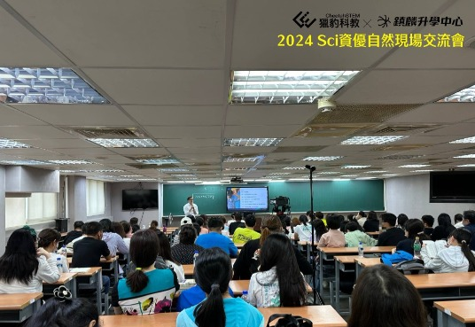

【 Sci資優自然超修課程】
獵豹與鎮麟今天上午在鎮麟自然科學中心舉辦的【 Sci資優自然超修課程】說明會，有近百名家長參加。
---
延續前兩週【獵豹與家長有約】的盛況，家長反應熱烈 欲罷不能，在會後許多家長圍繞宗翰老師詢問關於國中小的孩子的各種數理教育與升學問題（起蒙教育、資優數學、競賽、國內升學、國際升學、科學班備考、私中直升…）。
今天的演講會上，宗翰老師以精彩的實例說明Sci課程的特色：如何將數學與自然學科互相融合，他示範了高手如何運用數學觀念秒解了複雜的化學、物理問題，以及如何利用物理觀念巧解數學難題！讓大家腦洞大開 嘖嘖稱奇。
---
另外，宗嶽主任詳細的說明了關於各種升學制度，提供家長完整詳細的資訊。
因為上次參與獵豹有約後，許多家長都感到收穫滿滿，也向親朋好友們推薦，這次的說明會家長登記踴躍，而且出席率接近九成，有好多位家長特別從中南部趕來，令我們非常感動，在此獵豹與鎮麟致上最大的謝意。


後續獵豹也會針對不同年齡、不同目標，繼續舉辦不同主題的現場講座，以回應認同獵豹 支持獵豹的家長們 的需求與期待。
--
歡迎參加:
「2024 Sci11國中資優生物, Sci21高一化學+國中資優物理 報名開跑！」
https://www.facebook.com/groups/695697124716309/permalink/1488322458787101/
---
詳情請見下方臉書連結:
https://www.facebook.com/groups/695697124716309/permalink/1514916632794350/